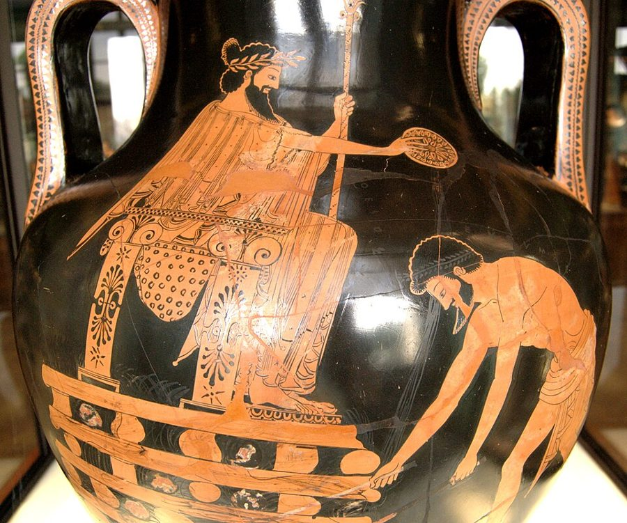
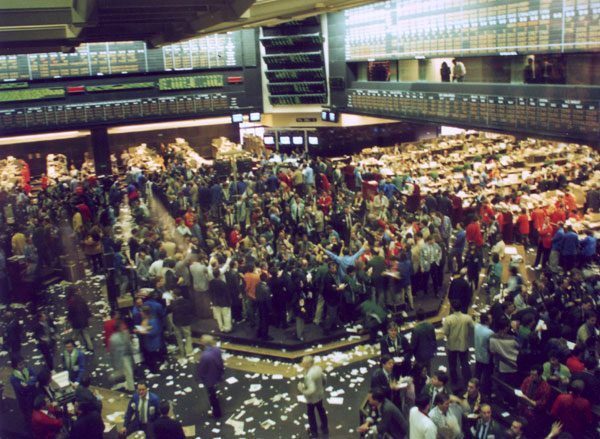
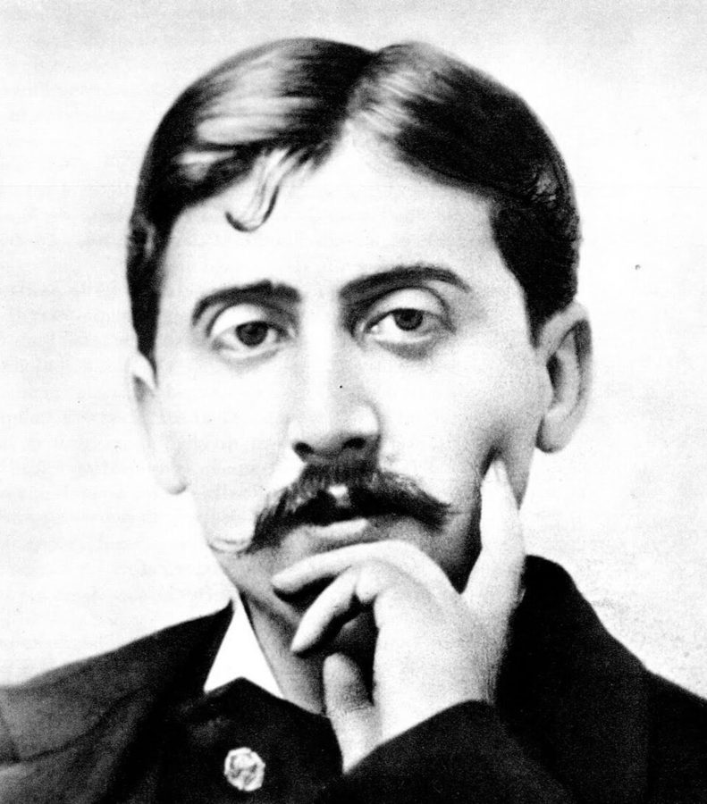

coup de foudre
… the French call a coup de foudre …
一见钟情
法语，字面是「雷击」，所以这一节的小标题叫 Hit by Lightning。§3 第一句又拿它作对比：一见钟情会过去，Nero 对交易的迷恋没有。
这是第一部的开场，也是全书人物故事的起点。先是一段古希腊传说：富甲天下的克罗伊斯问梭伦，自己是不是世上最幸福的人。接着镜头跳到芝加哥交易所门口一辆急刹的红色保时捷，作者编的交易员 Nero 出场；对街住着另一位交易员 John，房子大得多，赚得也多得多。两家人攀比、嫉妒，作者借此谈运气、地位和激素，最后说你的牙医其实很有钱。读的时候抓一条线：一个人现在有多少钱，和这些钱经不经得起运气，是两个问题。

序和前言交代了全书的体例；前言里那张区分噪声和信号的「混淆表」（表 P.1），§5 Nero 会提到。这一章是第一部「梭倫的警世之言」的第一章，§1 是整个第一部的篇首语，替第 1–7 章定了题。人物故事从这里开始，Nero 和 John 后面几章还会出现。§11 作者明说，下一章会讲一种奇怪的算账方法，第二部还会换个角度（幸存者偏差）再谈同一件事。
§10 作者说成功会给人注入血清素、改变姿态，还提到注射血清素的猴子、领导力和反社会人格。正文只说「科学家发现」「似乎」，书后注释也只列了几本延伸读物。相关研究确实有，但比他说的窄得多，样本也小。读时把这一节当作者的议论，详见「今天怎么看」。
一个人比你有钱得多，能说明他比你更有本事吗？
读的时候带着这几个问题。不用先找答案，读完回来对照「检查一下理解」。
开头是一段古希腊传说，读起来像寓言，是整个第一部的引子，作者自己也说它是编出来的。§2 突然跳到现代芝加哥，一辆红色保时捷把 Nero 引进交易这一行。接下来四节都是 Nero 的履历、性格和打法，作者把要紧的话藏在 §4 的打法里。§7 镜头转到对街的 John，相当长的篇幅写两家太太的攀比，这是社会讽刺，不是论证；§8 又插进普鲁斯特小说里的人物来安慰 Nero 的嫉妒，在这一节后半才把论点亮出来。§9 很短，只有两段。§10 作者从故事里退出来，自己议论成功、激素和领导力，插进猴子实验、父亲的格言和一位出租车司机。§11 用一对邻居的思想实验收尾，把话题交给下一章。读着会觉得「突然跳了」的地方有三处：古希腊到芝加哥，普鲁斯特，猴子。
这一页就是原书和译本的第 1 章，加上第一部的篇首语，一共 11 节。粗体是本站给的节名，后面是档和译本字数；下面是译本的小标题和这一节在译本电子书里开头的几个字（搜它就能跳过去），再下面是英文原文的开头。「先读」是这一章的骨架，「有空」好看、跳过不丢线，「可跳过」读不读都行。读完打个勾。
先把这一页用到、作者默认你懂的几个概念讲一遍。讲的是概念本身，作者拿它推出什么，读原书时自己看。别页讲过的概念，点链接过去看。
统计里的「小概率事件」只是说不常发生。作者用这个词时多了两层：一旦发生，后果巨大（恐慌、崩盘、一次赔光）；而且从过去的记录里看不出它会来，越是平静得久，越容易被忘掉。他在 §1 说，这本书里「稀有事件」和「黑天鹅」是同一样东西，都是哲学里归纳问题的另一个名字：过去一直如此，不保证以后如此。
程序员熟悉的例子：一个三年没出过事的系统，某天一次故障丢了所有数据。看它的监控曲线，三年都很漂亮。下面的示意图是两种账户曲线，形状正好相反。「多常发生」和「发生时多大」怎样分开算，见偏态；作者在序里怎样用黑天鹅这个词，见黑天鹅。
在这一页：§1 梭伦的直觉；§4 Nero 不让自己暴露在它下面，还想从中得益；§8 后半 Nero 拿它看对街的生意。
交易员的行话。亏钱是天天有的事；爆仓不一样，作者在 §4 给了一个很准的定义：亏得比自己预想的多得多，多到被赶出这一行，像医生被吊销执照。常见的原因是借了钱放大仓位（杠杆），或者押上了一种平时不出事、一出事就赔不起的风险。
止损是防爆仓最简单的办法：开一笔交易之前先定好「亏到多少就认赔离场」，到了就卖，不等它回本。代价是常常在低点卖掉、事后看「卖早了」，所以止损的人看起来总在小亏。打个比方：止损像给自己的线上服务设熔断，宁可时不时断一下，也不让一个坏请求拖垮整个系统。
在这一页：§4 Nero 的打法就建在这两个词上，§8 他用同一个词去看对街的 John。
期权是一份买卖「权利」的合约。买方付一笔钱，叫权利金（premium，译本：權利金），换来在约定日期前、按约定价格买入（看涨期权，call）或卖出（看跌期权，put）某样东西的权利；用不用随他。卖方收下这笔钱，承担义务：买方要行使，他就得照约定价格成交。
拿买房的定金打比方：你付 1 万元，换来三个月内按 300 万元买下一套房的权利。房价涨到 350 万，你照 300 万买，赚 50 万减去 1 万；房价跌了，你放弃，最多亏那 1 万。收定金的一方平时白赚这 1 万，房价大涨时却要把涨的部分全赔出去。「裸卖」是卖出期权、手里却没有能抵消损失的东西：平时月月收小钱，行情剧烈时可能亏得远超收进来的全部。
在这一页：§4 Nero 从不裸卖期权；§8 后半他说自己见过期权卖方栽在这上面。权利金的买方和卖方各是什么生意，见权利金卖方。
债券是一张可以转卖的借条：买债券就是借钱给发行的人，按期收利息，到期收回本金。借钱的人信用越好，付的利息越低，美国政府发的国债被当作最安全的一种。信用差的公司要付高得多的利息才借得到钱，它们的债就叫高收益债；评级机构把它们评在「投资级」以下，所以又叫垃圾债。
多出来的利息，是为可能收不回本金付的价钱。经济好的年份违约很少，持有人月月拿高息，看上去稳赚；经济转坏时违约会成片出现，这类债券的价格一起大跌。好比把钱借给一群信用不太好的人，收的利息高，赚的是「大家都还得上」那几年。
在这一页：§7 John 做的就是它；§8 后半 Nero 说，做这一行要会估稀有事件的概率。
价格由另一样东西「派生」出来的合约，统称衍生品。它本身不是公司的股份，也不是借条，而是对另一样东西（股票、债券、汇率、商品、一个指数）的价格做的约定：期权约定的是买卖的权利，期货约定的是将来某天按今天定的价格成交（见做空和股指期货）。它们的价格要靠数学模型来估，所以华尔街请数学和统计出身的人来做。
在这一页：§3 Nero 专做量化的金融产品，§8 一位亿万富翁常打电话问他衍生品值多少钱：作者拿这个说明 Nero 在行内的分量。
按在书里出现的顺序排，标题前是节号。只讲到读懂这一页需要的程度。
梭伦拜访克罗伊斯的故事最早见于希罗多德的《历史》，后来普鲁塔克写《梭伦传》又讲了一遍，§1 那段梭伦的话就是普鲁塔克的英译。作者自己说两人见面在年代上不可能，是编年史家添的想象。罗马的命运女神福尔图娜（Fortuna）§10 又出现一次。贝拉那句「胖女士唱完才算完」，今天一般认为不是他的话，是体育播音员 Dan Cook 1978 年让它流行起来的；原文把两句都放在贝拉名下。

芝加哥有两家大交易所：芝加哥商业交易所（Chicago Mercantile Exchange，§2 Nero 去的那家）和芝加哥期货交易所（Chicago Board of Trade，§10 出现）。那时期货在场内「公开喊价」成交：交易员站在一圈圈台阶似的交易池里，靠喊和手势报价，不同颜色的夹克表示不同身份，书里说黄色是职员。这种交易方式后来大多被电子交易取代。场内用自己的钱做交易的人叫 local，离开交易池、到办公室的交易台上做，叫「上楼」。
投资银行里有两种交易：替客户买卖、赚手续费和差价；用公司自己的钱下注，叫自营交易（proprietary trading，译本：自營交易）。§3 讲的是后一种：公司拨一笔资本给交易员，由他自己做主，年底按他赚到的利润分给他一个比例（书里说 7% 到 12%）。赚得多，第二年分到的资本多；亏了，资本会被收回。挖人时，公司还会许诺不论业绩都发的「保证奖金」。§3 顺带提到的德里达（Jacques Derrida，1930–2004）是法国哲学家，作者拿他代表圈外人读不懂的欧陆哲学。
美国国债（Treasury bonds，译本：財政部公債）是美国政府发的借条，被当成最安全的投资：违约的可能极小。但安全指的是到期能拿回钱，不是价格不动。债券的利息发行时就定死了，市场利率一涨，旧债显得吃亏，价格就跌；期限越长跌得越多。1994 年 2 月起，美联储一年里把短期利率从 3% 加到 6%，全球债券价格大跌，后来叫「债市大屠杀」。§4 说的成批出局，就在这一年。§5 说 Nero 手里是几百万美元的中期国债，§4 说它的价格「几乎没怎么变」，读的时候想一想这句话说得满不满。
§4 还有两条背景。「宇宙主宰」（Masters of the Universe）是 1980 年代对华尔街交易员的戏称，因汤姆·沃尔夫 1987 年的小说《虚荣的篝火》流行开来。1990 年代是美股的大牛市，尤其是后半段的科技股，很多公司还在亏钱，股价却涨了好几倍，Nero 一股都没买。

斯万是《追忆似水年华》里的人物：一位有钱、有闲、精于艺术的上流社会人士，和贵族交往很自在，到了一心往上爬的中产沙龙里反而要证明自己。小说里的盖尔芒特家是老贵族，维尔迪兰家是暴发的中产。原书把斯万叫作「画商」，其实他是收藏家和鉴赏家，并不卖画；书名作者也是自己从法文直译的。「啄序」（pecking order）本是动物学的说法，指鸡群里谁可以啄谁的固定次序，后来泛指一群人里的高低等级。§8 后半那个「宁要别人六万我七万」，原文只说「心理学家已经证明」，没写是谁；书后注释列的是 Kahneman 等人 1986 年和经济学家 Robert Frank 关于相对地位的研究。
血清素（serotonin）是大脑里传递信号的化学物质之一，和情绪、睡眠、食欲都有关，很多抗抑郁药就是通过它起作用。正文没说「注射血清素的猴子」是谁的研究（书后注释只说 Robert Frank 1999 年的书里有讨论），最有名的是美国学者 Michael Raleigh 和 Michael McGuire 1991 年发表的黑长尾猴实验。§10 后半提到的「社会情绪」、领导力和反社会人格（sociopath），正文也没指明是哪项研究（书后注释列了 Damasio 2003 年等几本书），口气是「似乎有奇怪的证据」。这些研究后来怎样，留到分界线以下。
纽约曼哈顿的公园大道（Park Avenue）是有名的富人区；卡茨基尔（Catskills）是纽约州北部的山区，从前是度假胜地，后来不少小镇衰落。作者拿这两头说牙医最好和最坏的人生。§11 说的「重活一次」，每一次是一条样本路径；「按期望」是什么意思，见期望值。John Doe 是英语里「某人」的代称，像中文的张三、李四，和 §7 的 John 无关；这一章几次拿新泽西开玩笑，John 的口音、中彩票的工友都和它有关。
读英文原文时值得停一下的词和句：交易员的行话、作者的反话和双关、熟词生义。灰色斜体是原句里连续的几个词，在英文电子书里搜它就能找到；标「每个字都认识」的，是每个词都眼熟、合起来意思却变了的，最容易读错。点「记下」收进词本。
对着译本读这一章时，下面这些地方会把人读歪。方框里是译本的原句，在译本电子书里搜它就能找到；灰色斜体是英文原文那一处。只收意思错了、反了、漏了的，措辞上的出入和台湾用语不收。全书的勘误汇总在译本勘误。
… to which a situation may yet …
译本：「一種情況可能還沒有與時俱變的程度」
原文：第一部谈的是，一种处境在时间里还可能改变到什么程度，正接着梭伦那段话。译本多了一个「沒有」，读来像在讲事情还没变，第一部的题目就弄拧了。
… I can be extremely humiliating when …
译本：「我會覺得是莫大的羞辱」
原文：有人用俗气的派头冒犯作者时，作者会让对方非常下不来台；Nero 却只是温和地保持距离。译本把主动变成了被动，作者和 Nero 的对照也就没了：原文用 unlike me，是作者第一次特意把自己和 Nero 分开。
… Beyond that, it is all randomness …
译本：「不這樣的話，一切都會隨機發生」
原文的 beyond that 是「超出这个程度」：Nero 相信，有风险意识的努力很可能让人过上舒适日子，再往上的成功全看运气。译本读成「不这样做的话」，变成了劝人努力，接下来那两句「温和的成功、狂野的成功」就接不上了。
… Wild success is attributable to variance …
译本：「大獲全勝則必須歸因於不同尋常的變異」
variance 是统计学的方差，量的是结果分散得多开：分得越开，越可能碰上极好或极坏的结局。原文没有「不同寻常」。「變異」读来像突变或反常，看不出这里说的是运气的幅度。
… a measure of suspicious exuberance …
译本：「尼洛這個人猶豫多疑」
exuberance 是精力过剩、兴致高昂，suspicious 修饰它：亢奋得让人起疑，紧跟着的 an unnatural drive（一股不自然的冲劲）是同一个意思。译本说成 Nero 犹豫多疑，方向反了，作者埋的伏笔也读不出来。
… rarely encountered repressed new wealth …
译本：「他太太卻很少見到行事低調的新富」
repressed 是穷怕了、压抑已久。译本说「行事低调」，可下一句马上说这种人急着炫耀，自相矛盾。读的时候把它换成「憋着一口气、急着显摆的新富」。
… never made an allowance for his vulnerability …
译本：「一定是因為自身的弱點尚未暴露」
原文是 Nero 的判断：John 混得好，是因为从来不给自己的弱点留余地，也就是不为可能的大亏打算。高收入正是从这种不设防里来的。译本说成「弱点还没暴露」，因果没了，只剩一句时间问题。
… he was just another one of those …
译本：「覺得約翰在心態上」
原文：在 John 面前，Nero 觉得自己受了那么多教育，也不过是「只要别人赚得更少、自己少赚点也行」的那种人。这是 Nero 的自嘲。译本把这句安到 John 头上，Nero 刚刚还在研究啄序、想开解自己，这一层自省就丢了。
… There was hope that John would …
译本：「有一天，約翰會一無所有。」
原文是 there was hope：Nero 盼着对街的邻居栽跟头，是嫉妒里冒出来的念头，和这一段后面「他可能沦落到去卖豪华车」一样，都是 Nero 的想象。译本写成一句干脆的肯定句，读来像作者在下判断。
… no better than randomly thrown darts …
译本：「其實比不上隨便丟飛鏢得到的結果」
no better than 是「和……差不多，不比它好」：一大批业绩出色的人，其实和随手乱扔飞镖选出来的结果一样，是运气。译本说「比不上」，变成他们比随机还差，意思走过了头。
… just like an animal’s dominant condition …
译本：「就像動物的顯性條件」
这里说的是动物群里的等级：动物在群里占上风时，身体会显出来，好让别的个体看见。「顯性」是遗传学里显性基因的说法，读来像在讲基因，和这一节说的地位、姿态对不上。
… Arguably, in expectation, a dentist is …
译本：「我們可以預期牙醫師」
in expectation 是概率论的「按期望值」，即把所有可能的结局按概率平均。「预期」读来像日常的「预料」，好像在预测牙医将来会更有钱。arguably（可以这么说）这个留余地的词也丢了。
读完这一章再看。下面是作者在这一章里的主张，由本站按主张之间的逻辑重新组织，不按原书的顺序；每条后面是节号，拿不准就回书里那一节再读一遍。
作者借梭伦说：靠运气得来的东西，运气也能拿走，而且常常（often）又快又出人意料；反过来，少靠运气得来的更经得起随机，这一面他说更值得关心。梭伦还摸到了两个问题：归纳问题（本书叫黑天鹅、稀有事件），和偏态问题：失败代价大到承受不起时，成功得多频繁都不要紧。
§1作者说，任何时候都有一大批业绩出色的生意人不比乱扔飞镖强；由于一种偏差，本事最差的人反而最富的例子会多得是，而他们不会把运气算进去。他借 Nero 之口说：温和的成功可以用本事和努力解释，狂野的成功要归于方差。飞镖那一条，他说后面会讲清楚。
§5 §10他拿 Nero 和 John 的故事说明：John 做高收益债，月月赚钱，Nero 认为他背着一种自己看不见的爆仓风险，像在铁轨上打盹。1998 年 9 月，John 被解雇，几乎赔光了一切，作者说这证明了 Nero。这是作者编的故事，Nero 自己也一度怀疑，这个判断是不是出于嫉妒。
§8 §9幸运的傻瓜不知道自己是幸运的傻瓜。作者说，一连串成功会改变人体内的化学物质和姿态：站得直、说得多、显得自信，于是看上去「配得上那些钱」，直到运气回头。他的依据是转述的研究（「科学家发现」「似乎」「行为科学家相信」）和自己在交易室、出租车上的观察。
§10作者预告下一章的算法：一个人的财富，要按他可能过的所有人生平均来算。Nero 冒险少，坏结局很少，按这种算法很富；牙医重活几千次，结局的范围很窄。评价一个职业，要看所有入行的人，不能只看成功的那些。他承认这听上去像疯话，说老故事可以比现实更有力。
§11合起来：别拿一个人此刻的财富和自信去判断他的本事；要问他的钱是怎么来的、碰上坏运气会剩下多少。克罗伊斯的柴堆和对街那座大房子，讲的是同一件事。
it does not matter how frequently something succeeds if failure is too costly to bear.— §1。本站译：如果失败的代价大到承受不起，一件事多常成功就无关紧要了。
这是作者给「偏态问题」下的第一个定义，口气是下判断，没留余地。关键在 too costly to bear：说的不是失败亏多少，而是能不能承受，承受不起就出局了，再多的成功也没机会用上。译本：「那麼某件事有多常成功一點也不重要」意思到了。容易被误读成「成功率无所谓」：作者在第 6 章会把「多常」和「多大」分开算，这里只是先立一个极端。
Mild success can be explainable by skills and labor. Wild success is attributable to variance.— §5。本站译：温和的成功可以用本事和努力解释，狂野的成功要归于方差。
两句对仗，mild 和 wild 只差一个字母，是全章最好记的一句。但要看清这是 Nero 相信的事（原文前面是 Nero believes），作者借人物之口说，§10 他自己说的时候口气就软了：有时能说明本事，但不总能。variance 是统计的方差，不是「变化」或「意外」。
这本书 2004 年出第二版，书里讲的多是 1980–2003 年的事。下面挑出这一页里能被后来的研究或事情检验的说法，分「书里 / 当时 / 今天」几栏，并给一个结论。结论判的是标题里「书里的说法：」后面那一句。全书的这一节汇总在今天怎么看。
读完作者的主张，再看它站不站得住。每一块摆出三样：主流怎么看，作者怎么看，本站的评论。最后一句是本站对这一页的总体判断。
主流看法：心理学把「按结局评判决定好坏」叫结果偏差（outcome bias）：同一个决定，结局好人们就说它高明，结局坏就说它愚蠢，哪怕当初的信息完全一样（Baron 和 Hershey 1988 年的实验）。评判一个策略，要看它在下注时冒了什么风险，不能只看这一次怎样收场。
作者的看法：John 的高收入背着他看不见的爆仓风险，1998 年 9 月证明 Nero 是对的；但他也让 Nero 自问，这个判断是不是出于被看轻的感觉。§8 §9
本站的评论：这是作者编的寓言，结局由他来定，所以它不能证明保守的人终会赢。它的力量在 §8 后半：Nero 在 John 风光的时候，就讲清了风险在哪，这个推理不靠结局。两家太太的攀比、塞舌尔在哪个洲，是作者的阶层讽刺，好看，但和概率无关，别把对 John 的反感当成论据。全书反复警告不要以成败论英雄，读这个故事时也别忘了。
主流看法：Kahneman 在 2011 年的《思考，快与慢》讲回归平均时写过一个有名的「公式」：成功 = 天赋 + 运气，大成功 = 多一点天赋 + 很多运气。统计上的道理是：很多人同时竞争时，排在最顶上的往往是本事和好运同时碰上的人，下一回合多半会往回掉。
作者的看法：温和的成功靠本事和努力，狂野的成功归于方差（Nero 相信的）；业绩和财富「有时」能说明本事，但不总能。§5 §10
本站的评论：方向是对的，而且作者比 Kahneman 那本书早了十年。要留意两点：作者借 Nero 说的是「全靠方差」，自己说的时候是「有时」，后者更站得住；「狂野的成功」里运气占大头，不等于本事不重要，只是在顶端，本事拉不开那么大的差距。程序员熟悉的例子：同一批创业者，做出独角兽的那几家，团队未必比关门的那几家强多少。
主流看法：经济学家 Sherwin Rosen 1981 年的《超级明星经济学》说明：在演艺、体育这类行业，少数顶尖的人拿走大部分收入，收入分布拖着一条极长的尾巴，入行者的平均数会被少数巨星拉得很高，中间那个人却挣得很少。彩票则相反，买彩票的期望是负的。
作者的看法：「可以说」（arguably），按期望值，牙医比摇滚乐手、炒画的投机客、收藏私人飞机的企业家都富得多；评价一个职业要看所有入行的人的平均。§11
本站的评论：这里作者把两件事混在一起说了。一是期望值（平均下来多少）：对中彩票的工友，他完全对，彩票的期望本来就是负的。二是结局的范围（坏起来有多坏）：牙医重活几千次，结局都差不多，这说的是风险小，不是平均高。对摇滚乐手，平均数完全可能被几位巨星拉到比牙医还高；那时牙医「更富」靠的是不会一败涂地。作者留了 arguably；这两层，后面讲另类历史和偏态的几章会分开讲。
本站的总体看法：这一章的故事比论证多，但它立起了全书最要紧的一个问题：钱是怎么来的，比有多少更重要。「看不见的风险」和「大成功多靠运气」值得带走；Nero 和 John 的结局是作者安排的，当寓言读；§10 的血清素和猴子是作者最弱的一段，打个大折扣。
先在心里答，再点开。答错的那题，回书里把对应那一节再读一遍。
一是归纳问题：过去一直好，不保证以后也好，作者在这本书里叫它黑天鹅或稀有事件。二是偏态问题：失败的代价大到承受不起时，成功得多频繁都不要紧。
他最怕的不是亏钱，而是爆仓、被赶出这一行，回到无聊的大学。一个会让他出局的风险，不能拿「不太会发生」来抵。代价是他赚得比别的交易员少。
很长一段时间月月赚钱，某天下午火车开过来，几个小时就赔掉累积利润的好几倍。Nero 认为 John 入市太短，没见过这种事，也不肯去读历史。
他怀疑自己说 John 浅薄、只是运气好，是客观评价，还是因为被 John 看轻了才这么想；也许他自己并不是最好的交易员，该更拼一点。他还发现自己也只看相对收入，和他研究的那些人一样。
有时能说明本事，但不总能：任何时候都有一大批出色的业绩不比乱扔飞镖强。他的自信和姿态，可能正是连胜的结果，而不是本事的证据。要问的是他的钱靠什么赚来，坏运气来时会怎样。
工友一百万次里只有一次中奖，其余都在当工友、白买彩票。按所有可能的人生平均算，牙医更富，而且他的坏结局也坏不到哪去。作者说这种算法下一章细讲。
用一句话说这一页：
想一想：你身边有没有一份收入（你的、朋友的、一个行业的），看上去又高又稳，但它靠的是一种平时看不见的风险？如果有，要出什么事它才会露出来？
读过又忘了，从这里想起来。挑的是这一页最值得记住的故事和说法，不按原书顺序；每条后面是节号，想细看就回书里那一节。全书各页的这一节都收在全书回顾。
一句话：一个人现在有多少钱，说明不了他的钱经不经得起运气。
克罗伊斯问梭伦自己是不是最幸福的人，梭伦说要等到最后。后来克罗伊斯被绑上火刑柴堆，喊出梭伦的名字，居鲁士听了缘由，想到自己的命运，饶了他。作者说这是传说。
§1一个满脸通红的交易员把红色敞篷保时捷往交易所门口一扔，像被老虎追着冲上台阶；穿黄夹克的职员慢悠悠下来把车开走。Nero 当场叫道：这就是我要的！
§2有人问 Nero 为什么亏了就跑，他总说自己是芝加哥「最胆小的」交易员 Stevo 带出来的。作者说这不是真的，真正的原因是他学过概率，天生多疑。
§4Nero 眼里的高收益债：月月赚钱，很舒服，直到某天下午火车开过来，几个小时赔掉累积利润的好几倍。1998 年 9 月的一个早晨，John 没穿西装，在前院抽烟。
§8 §9作者的父亲说：是的话，他早就告诉你了；不是的话，你会伤他的心。同理，别问交易员今天赚没赚，看他走路的样子就知道。
§10中了彩票的工友和钻了三十五年牙的牙医是邻居。让两人各重活很多次，工友几乎每次都在当工友，牙医每次都在钻牙。作者说按这种算法，牙医才是有钱人。
§11